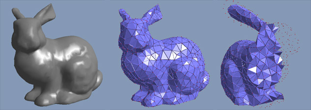
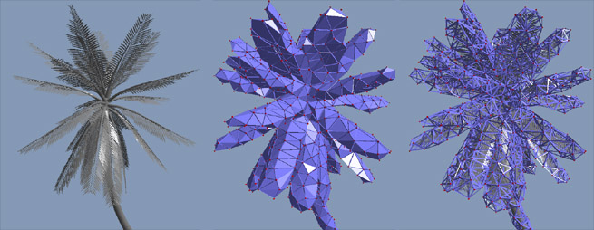
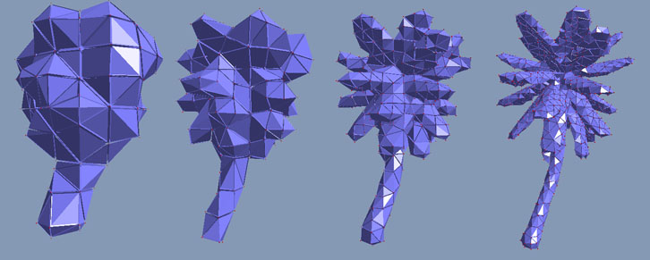

The soft body feature of the NVIDIA PhysX SDK allows the simulation of volumetric deformable objects. It can also be used for items that are not usually thought of as classical soft bodies, such as plants or multiple layers of cloth. Here are some examples:
To simulate complex geometry like a tree with many branches and leaves, a coarser volumetric mesh is first build around the object. The volumetric mesh is then simulated and moves the complex geometry with it (see soft body rendering). The advantage of the technique is that it makes the simulation of triangle soups possible, i.e. every possible mesh can be simulated.
The soft body feature is very similar to the cloth feature. Therefore, the two features have similar parameters and methods. Here are the main differences
| Cloth | Soft Body |
| Represented by a triangle mesh | Represented by a tetrahedral mesh |
| A cloth is a surface | A soft body is a volume |
| The triangle mesh is used for simulation and visualization | The tetrahedral mesh is used for simulation only |
| The artists triangle mesh can be used directly | A tetrahedral mesh has to be generated for the triangle mesh |
The content pipeline for soft bodies has some additional stages to the cloth pipeline.
The following images show a tetrahedral mesh (middle, right) that was generated for a triangle mesh (left). The right most cut through the tetrahedral mesh shows that it covers the volume.

The process works for arbitrary triangle soups like the palm tree. The image on the right shows how the original triangle soup is embedded in the tetrahedral mesh which is shown in wireframe mode.

The resolution of the tetrahedral mesh can be chosen independently of the resolution of the triangle mesh. This allows for choosing a level of detail for the simulation without losing visual resolution. The following images show different resolutions of a palm tree mesh. With the coarser meshes, independent movement of individual leaves is not possible. To get this dynamic feature, more tetrahedra are needed as shown on the right:
